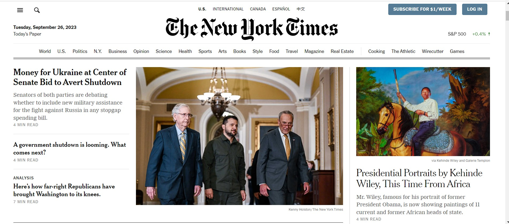
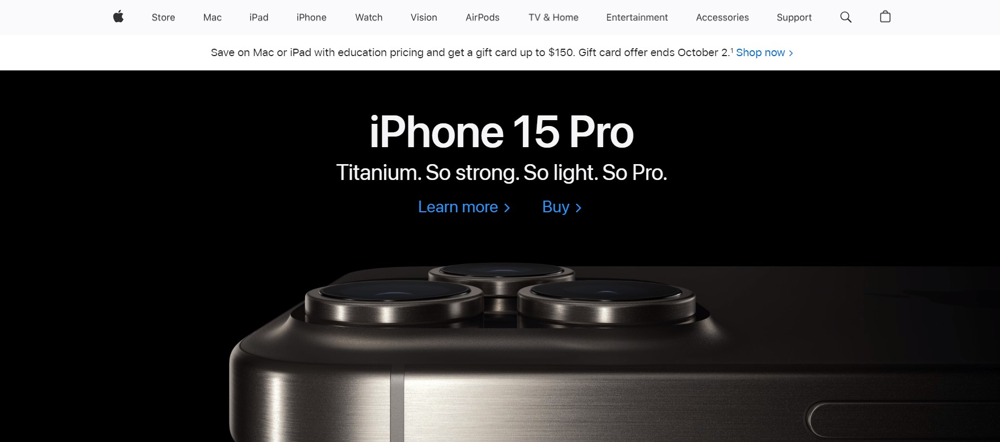
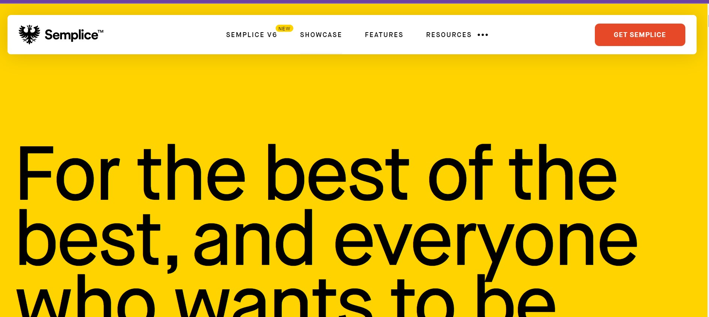

Visual Hierarchy
The New York Times
https://www.nytimes.com/
The New York Times website effectively demonstrates the principle of visual hierarchy. Headlines are prominently displayed at the top, utilizing larger font sizes, bold typography, and strategic placement to draw the viewer's attention. This design element immediately communicates the importance of news stories, guiding users to the most relevant content.
Hick's Law
Apple
https://www.apple.com/
Apple's website exemplifies Hick's Law by offering a limited number of choices in its product lineup on the mobile homepage. Users are presented with a focused selection of flagship products, reducing decision fatigue. This streamlined approach simplifies the decision-making process and encourages users to explore these key products further.
White Space and Clean Design:
The City of Mesa - Public Library
https://www.semplice.com/
The Semplice website showcases clean design and effective use of white space. The minimalist approach ensures that there is ample white space around portfolio examples, which makes the content easy to focus on. Unnecessary clutter is removed, allowing the user to appreciate the showcased work without distractions. This design choice enhances the user experience and emphasizes the quality of the portfolio.